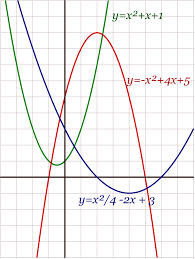

La matemática es una ciencia lógica deductiva, que utiliza símbolos para generar una teoría exacta de deducción e inferencia basada en definiciones, axiomas, postulados y reglas que transforman elementos primitivos en relaciones y teoremas
más complejos. Esta ciencia enseña al individuo a pensar de una manera lógica y por lo tanto a desarrollar habilidades a resolver problemas y tomar decisiones. Las habilidades numéricas son valoradas por la mayoría de los sectores,
se puede decir que en algunos casos son considerados esenciales.
Hace aproximadamente 3.000 años, los griegos comenzaron a buscar explicaciones racionales a fenómenos naturales y sentaron las bases de la geometría y la aritmética. Destacaron figuras como Pitágoras o Téano.
TEMAS VISTOS EN EL AÑO
FUNCIONES CUADRATICAS
Una función cuadrática es un tipo de función que se caracteriza por ser un polinomio de segundo grado. En otras palabras, una función cuadrática es una función que en la que uno de los elementos lleva un 2 pequeño como índice superior.
Una función cuadrática también recibe el nombre de función de segundo grado.

POLINOMIOS
Un polinomio es una expresión algebraica de sumas, restas y multiplicaciones ordenadas hecha de variables, constantes y exponentes. En álgebra, un polinomio puede tener más de una variable (x, y, z), constantes (números enteros o fracciones)
y exponentes (que solo pueden ser números positivos enteros).
ECUACIONES DE PRIMER GRADO
Una ecuación de primer grado es una igualdad matemática con una o más incógnitas. Dichas incógnitas deben ser despejadas o resueltas para encontrar el valor numérico de la igualdad.
INECUACIONES
Es la desigualdad existente entre dos expresiones algebraicas, conectadas a través de los signos: mayor que >, menor que
<, menor o igual que ≤, así como mayor o igual que ≥, en la que figuran uno o varios valores desconocidos llamadas incógnitas, además de ciertos datos conocidos.
INECUACIONES DOBLES
Una doble desigualdad es del tipo: a>b>c a > b > c y es la intersección de a>b y b>c e implica que a>c (la relación podría ser ≥ o también
< 0 ≤ y se tratarían de la misma manera).
INECUACIONES DE SEGUNDO GRADO
Inecuación de segundo grado: cuando las expresiones de ambos lados son polinomios de grado menor o igual que 2. Esta inecuación no tiene soluciones (reales) puesto que ningún número al cuadrado es negativo. Inecuación racional:
cuando las expresiones de uno o ambos lados son un cociente de polinomios.

.jpg)